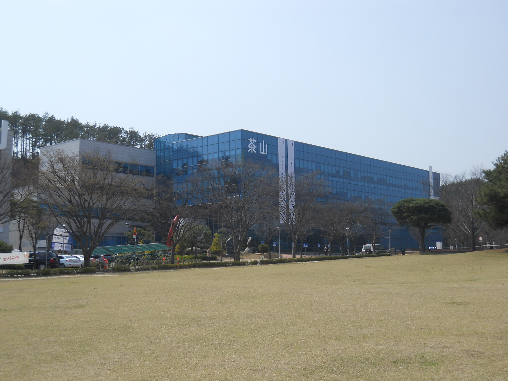

01 소개
안녕하세요.
김동찬입니다.
한국기술교육대학교 컴퓨터공학부 소속입니다.
학교와 연락처를 이곳에서 확인하실 수 있습니다.
- 이름
- 김동찬 Dongchan Kim
- 학교
- 한국기술교육대학교
- 학부
- 컴퓨터공학부

다산정보관 · 2015.04 / 사진: Wodndb · CC BY-SA 4.0화면에 맞게 표시 영역 조정
03 연락처
한국기술교육대학교 컴퓨터공학부 소속입니다.
학교와 연락처를 이곳에서 확인하실 수 있습니다.

다산정보관 · 2015.04 / 사진: Wodndb · CC BY-SA 4.0화면에 맞게 표시 영역 조정